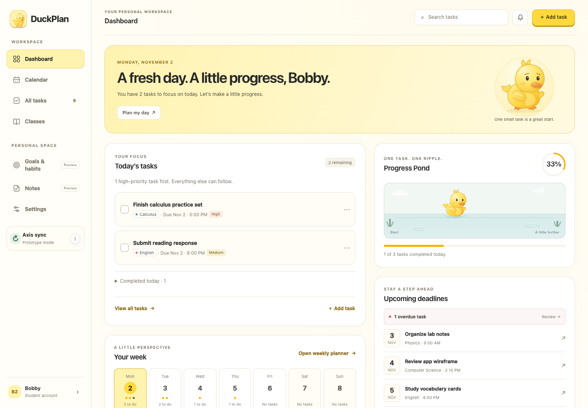
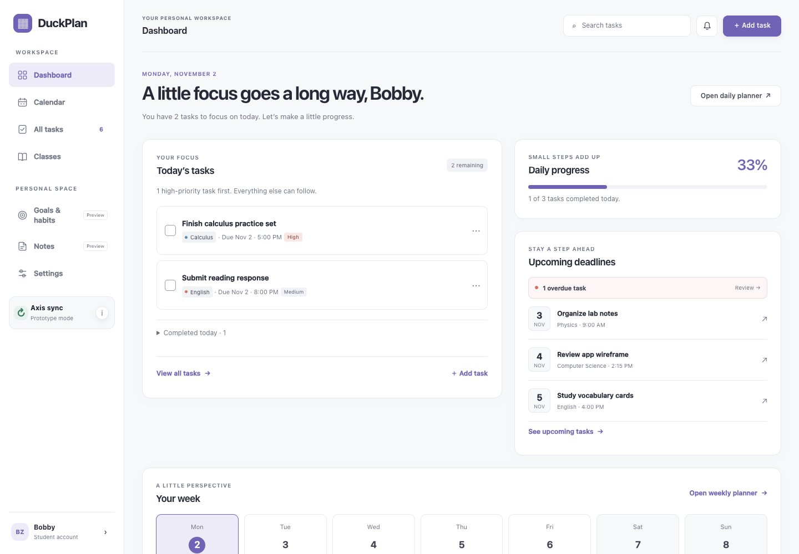
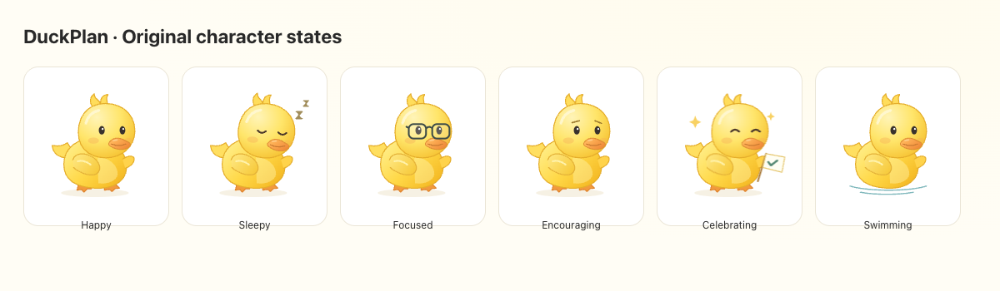
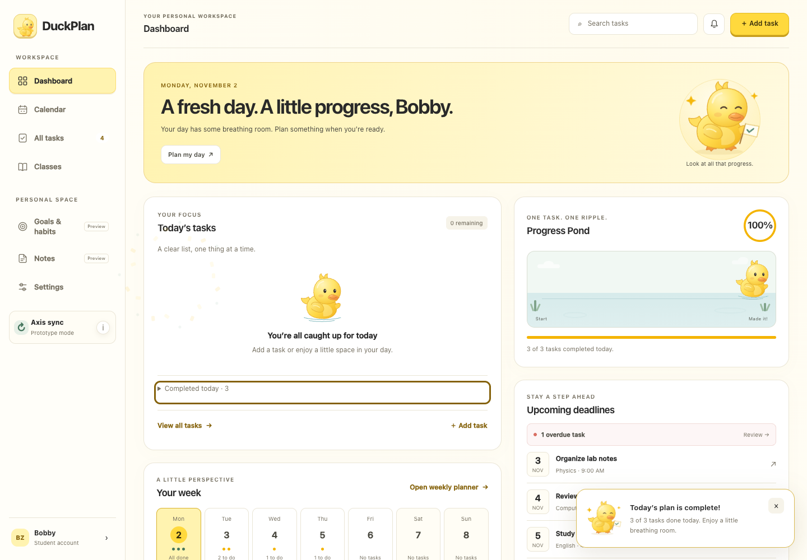
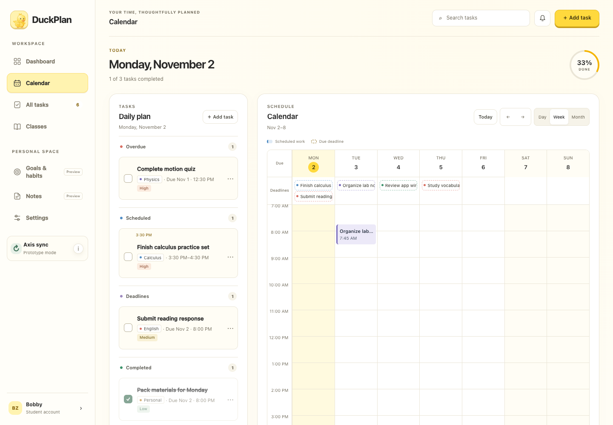
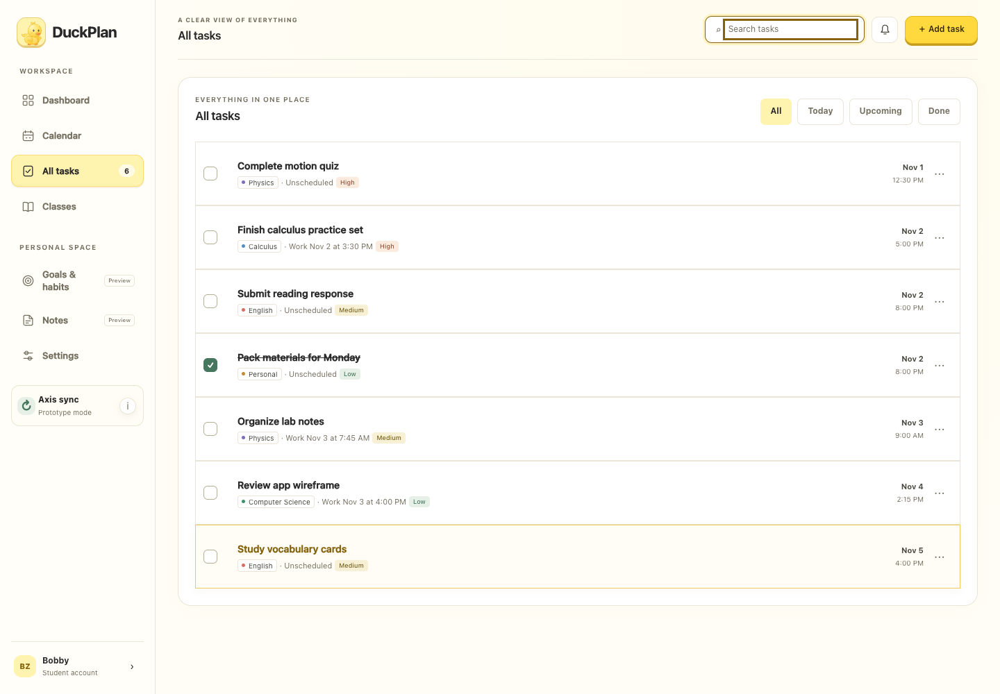
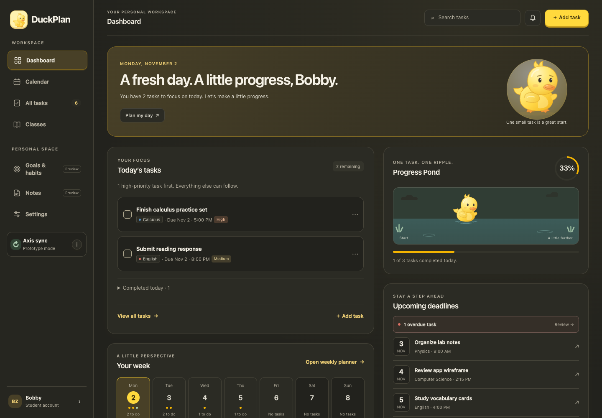
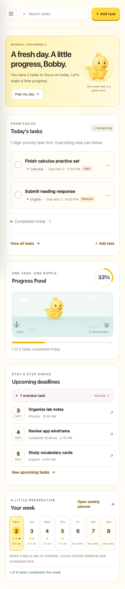

- A warmer, more expressive digital planner.
- Frontend design, layout, accessibility, and microinteractions.
- Group project · Michael, Bobby & Priya
UI/UX redesign · Priya

Same dashboard, same 1440 × 1000 viewport

Today’s work, visible progress, and a week at a glance
Reusable SVG illustration, without a large animation library

Brief, nonblocking feedback tied to real task completion

Existing calendar and task features, with a cohesive visual system


Responsive layouts, dark mode, and accessible interactions


A frontend-only redesign that respects team collaboration